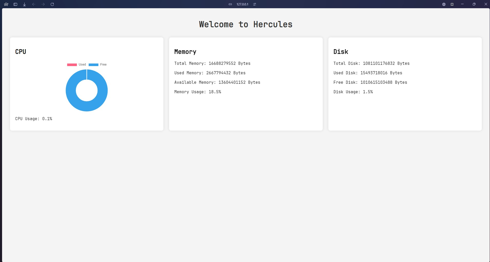

Docker及Container的使用
Date: 2024/07/03
Auth: Guanyan.Wang
Environment: Microsoft WSL2 - Ubuntu 22.04
0. 學到docker的契機
之所以會碰到docker這個東東，是因為一個隔壁team大佬分享的故事
之前他們在進行某個案子的時候，因為每個人在進行開發時使用的環境都不一樣
* A同事用 Windows 10
* B同事用 Linux
導致他們在進行整合時就需要解決一大堆相容性的問題，真的是一大堆，搞得大家都很不愉快
Debug到快發瘋，誰會爽呢(╯‵□′)╯︵┴─┴
因此才會去接觸到Docker這個東東，來統一所有人的環境，避免掉這些不必要的麻煩，
後來引進到部門內後，才讓我有這個契機去學習docker這個酷東西
另外docker也有相當多的應用！
例如：使用docker建立自己的gitlab server並結合各個自製的container架構出嚴謹的CI/CD環境。
1. 什麼是 Container
容器(Container)是一種虛擬化的技術，用來封裝應用程式及其dependencies，確保在不同的環境上都能夠正確的運行
容器與傳統的VM不同，它不需要整個作業系統，只需應用程式及其相關的library、設定檔和必要的執行環境。因此container非常的輕量，啟動速度非常快，資源開銷低。

container structure
2. Docker 的安裝
以在WSL2環境下運行，我們先安裝 Docker desktop
>>> [點此前往安裝 Docker] <<<安裝完成後先前往設定頁面將WSL2與Docker engine整合。
成功開啟後就可以到WSL2的環境底下使用Docker command囉

Enable WSL2 Engine with docker

Enable use docker command in WSL2 environment
3. 使用docker-compose建立container
Docker compose是docker中相當重要的command，docker會根據yml檔定義的內容建立container
Docker-compose.yml:
services: web: container_name: fastAPI build: context: . dockerfile: fastAPI_Dockerfile ports: - "8000:8000" volumes: - /code/fastAPI/:/app這個yaml檔定義了container的名字，對外對接的port number，建構image時所要用的檔案等訊息。
接著只要在這個docker-compose.yml的目錄下輸入command:
docker-compose up -d就會自動的創造image並製作一個符合docker-compose.yml定義的container
4. 使用Container運行我的網頁
這裡簡單的介紹一種Container的運用！container在啟動時通常會伴隨著一些使用者預先設定好的Command
這裡以我自己練習的網頁為例子，我架設了一個用 Python fastapi 編程的監控設備網頁。只要運行：
docker-compose up -d就會自動的執行我所設定好的command並啟動網頁。
docker-compose command example
就是這麼簡單方便，並且開啟container也僅僅只需要幾秒鐘的時間，非常便利好用。
如果你想看到更具體的內容，可以打開 docker desktop 看到詳細的 log 資訊
docker-desktop log messages
那麼就可以前往瀏覽器，輸入 127.0.0.1:8000，port number 是我自己設定的，當然也都是可以自訂義的。
 example website
5. Docker 的一些相關設定
在剛剛我們有提到 docker 可以去定義一環境的設定以及執行定義的 command，這些都歸功於 docker-compose.yml 以及 Dockerfile
Dockerfile 是另一種 docker 提供的建立 image 的方式，畫重點！是 image 而非 container 唷！
我們會透過 docker-compose.yml 去定義要使用哪一個 Dockerfile 去進行 build image 的動作。
FROM python:3.12.5-bullseye WORKDIR /app COPY . . RUN pip install --no-cache-dir -r requirements.txt EXPOSE 8000 CMD ["uvicorn", "main:app", "--host", "0.0.0.0", "--port", "8000", "--reload", "--header", "server:Hercules-api", "--header", "version:1.0.0"]從這個 Dockerfile 中我們可以看到，我們從官方下載 python官方製作好的，版本為 3.12.5 的 image
接著定義這個 image 進入的資料夾，並將本地端的所有資料都複製到 image 的 WORKDIR 中。
下載我們所需要的 python packages，requirements.txt 會在剛剛的 copy 中一併被複製過去。
這樣子就完整的建立了需要的環境了，最後只需要把 port 對接好，並且運行 command 進行 web server 就完成了。
只要我們運行 docker-compose up -d 的 command， docker 就會自動運行對應的 Dockerfile
並 build 一個環境完整的 image。
docker image
這樣就簡單的完成了一個 docker 的 image 了，因此在開發時僅僅需要把 Dockerfile 以及 docker-compose.yml
丟給你的同事，在開發上你們就不會有發生相容的問題了！
如果還有問題就離了吧，這地方沒前途 ( ˘•ω•˘ )
6. Reference
這篇文章只有簡單的說明以及運用 docker，若要更詳細的了解，可以 Email 給我又或是參考官方文件。
非常感謝公司的大佬們的教導。
參考 - Docker official documents: [docker官方提供的文件]